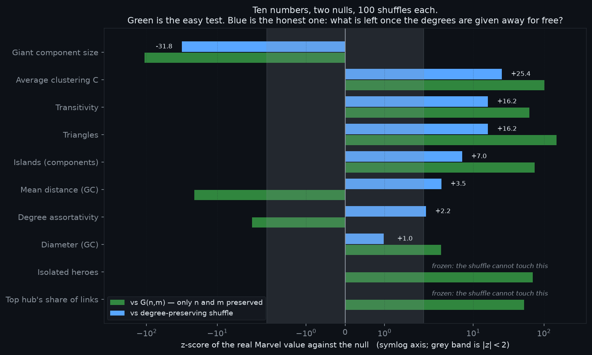
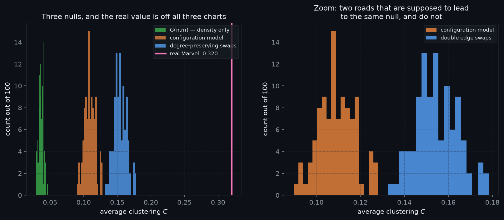
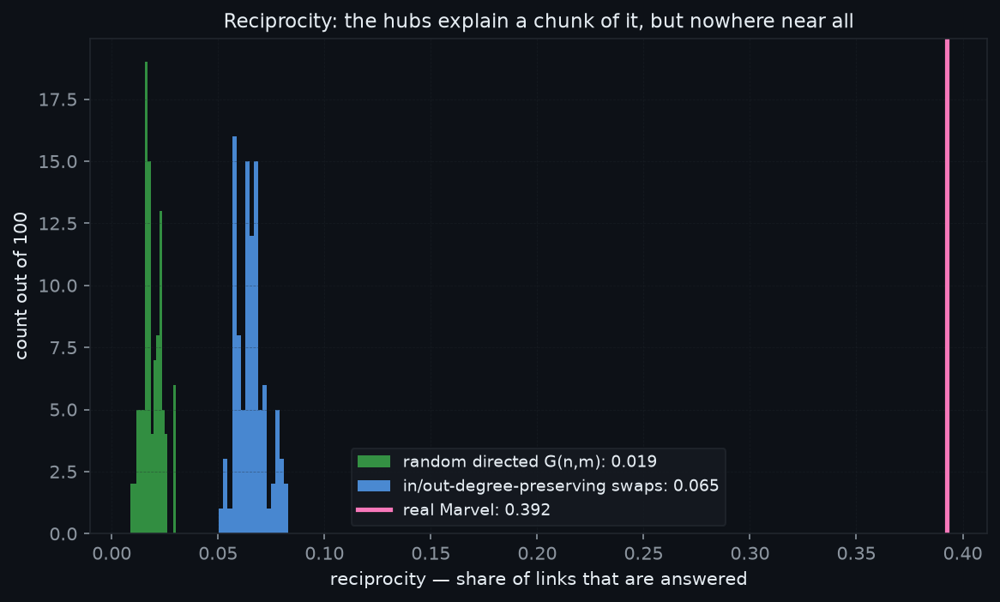
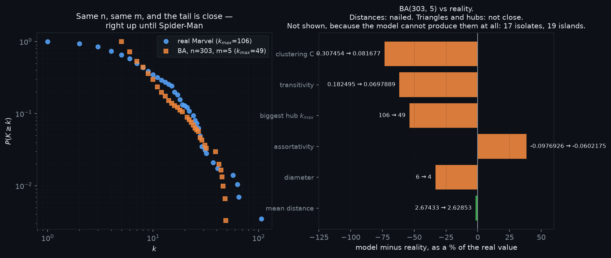
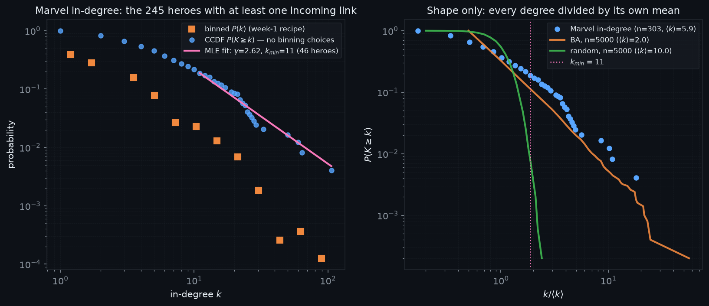

Last week we wrote that the Marvel network has a clustering coefficient of 0.31, that 39% of its links are reciprocated, and that 17 heroes are completely invisible. We reported those numbers as if they meant something.
They don't — not on their own. A number about a network is only interesting relative to a world where the interesting thing didn't happen. So this week we built that world, one hundred times over, and put every number we had on trial: keep each hero's popularity exactly as it is, rewire everything else at random, and see which of our findings are still standing afterwards.
Seven of the ten died — two of them only barely. One survived. And two of them, it turns out, could never have died in the first place, which is its own kind of lesson.
What we found
- Triangles are the real structure. Marvel's clustering (0.32 on the giant component) sits 17 standard deviations above a degree-preserving shuffle. Nothing about who is famous explains it.
- Several of our week-1 "findings" were facts about the degree sequence. The diameter is exactly what you get by accident once everyone's degree is fixed, and the assortativity is within a whisker of it. The 17 isolates are not even a result — the shuffle cannot move them.
- The famous "13× more reciprocity than chance" style of claim is wrong twice. Against a random directed graph it is 20.6×. Against a null that keeps everyone's in- and out-degree, it is 6.0×. Same data, same effect, three different headline numbers.
- The friendship paradox has exactly two kings. 87% of Marvel heroes are less popular than the average of their friends, and only two characters in the entire network are never out-popularised by anyone they link to: Spider-Man — and an obscure hero named Radian, whose entire social world is eight other people. One king per island.
- We cannot tell you the Marvel degree distribution is a power law. We fit one (γ = 2.62). We also fit a log-normal. The likelihood-ratio test cannot separate them (p = 0.43), and we show below why 303 nodes were never going to be enough.
1. The lineup
Here is the whole idea in one picture. We took ten numbers you can compute about the Marvel network and asked each of them the same question twice.
The easy question (green): is this bigger than in a random graph with the same number of heroes and the same number of links? That null throws away everything — it does not know that Spider-Man exists.
The honest question (blue): is this bigger than in a network where every hero keeps their exact degree and nothing else is preserved? We build that by taking the real network and applying 14,340 degree-preserving double edge swaps — ten per link: pick two links, cross them over, keep the count at every node the same — one hundred separate times.

| Statistic | Real Marvel | Degree-preserving shuffle | z | Verdict |
|---|---|---|---|---|
| Giant component size | 277 | 285.96 ± 0.28 | −31.8 | dies |
| Average clustering C | 0.3075 | 0.1431 ± 0.0065 | +25.4 | dies |
| Transitivity | 0.1825 | 0.1148 ± 0.0042 | +16.2 | dies |
| Triangles | 1,839 | 1,157 ± 42 | +16.2 | dies |
| Islands (components) | 19 | 18.02 ± 0.14 | +7.0 | dies |
| Mean distance (giant comp.) | 2.674 | 2.632 ± 0.012 | +3.5 | dies (barely) |
| Degree assortativity | −0.098 | −0.120 ± 0.011 | +2.2 | dies (barely) |
| Diameter (giant comp.) | 6 | 5.47 ± 0.54 | +1.0 | survives |
| Isolated heroes | 17 | 17 ± 0 | 0 | frozen by construction |
| Top hub's share of links | 0.0739 | 0.0739 ± 0 | 0 | frozen by construction |
What the survivors mean
The diameter survives (z = +1.0). Six hops from one end of the Marvel universe to the other is not a fact about Marvel. It is a fact about having 277 nodes, 1,421 links, and one enormous hub — any wiring with that degree sequence gives you roughly six. If we had written "the Marvel universe is remarkably compact" last week, this is the sentence that would have been wrong.
The frozen two are worth more than they look. "17 isolated heroes" and "Spider-Man owns 7.4% of all links" are numbers a degree-preserving shuffle can never change, because they are functions of the degree sequence alone. Their z-score against the shuffle is exactly zero and always will be. That is not a null result — it is a statement that we asked the wrong null. Both are wildly extreme against G(n,m) (z = +70 and +52), and the interesting question about them is not "is this random?" but "what process produced a degree sequence like that?" We come back to that in section 5.
The giant component is a nice surprise in the other direction. The real giant component is smaller than a shuffle of itself, by 32 standard deviations. Marvel's 9-node Strikeforce: Morituri island — Radian, Vyking, Scaredycat, Blackthorn and friends — has enough internal links that a random rewiring would almost always splice it into the mainland. It stays separate because those nine characters link to each other and to no one else. That is real, interpretable structure: a corner of comics history that never got cross-referenced.
2. Run it yourself
Reading someone else's permutation test is not the same as watching a null distribution appear. So here is the machine. It holds the actual 277-hero giant component in your browser, and every time you press the button it runs 25 fresh shuffles — 14,210 degree-preserving edge swaps each — and drops the resulting statistic into the histogram.
Try Links among the top 20 hubs and Spider-Man's share of all links back to back. The first wanders a little every time you press the button and lands close to the real value — 87 real against about 80 ± 4 shuffled, so the hubs are not unusually wired to each other once you know how big they are. The second cannot move at all, ever. The difference between "not significant" and "not even possible" is the whole reason to think about your null.
(The machine works on the 277-node giant component; the battery in section 1 uses all 303 heroes, so their numbers differ a little. Everything else is the same procedure.)
The Shuffle Machine
277 heroes · 1,421 links · degree-preserving double edge swaps, computed live in this page
It needs JavaScript and the data file next to it; everything below stands on its own without it.
The same numbers, computed in Python, are in
analysis/week2_results_nulls.json.
3. Two roads to the same null, and they do not agree
There are two standard ways to build "the same degrees, everything else random". You can throw the network away and rebuild it from the degree sequence (the configuration model), or you can keep the network and shuffle its links in place (double edge swaps). They are supposed to sample the same thing. They do not.

The gap is 0.109 versus 0.155 — a 42% difference between two methods that are described in the same paragraph of every textbook. It comes from the cleanup step. The configuration model produces self-loops and duplicate links, and the standard fix is to delete them. On Marvel that costs 103 links, 7.3% of the network. The question is whose links.

There it is. A node with k stubs has roughly k² chances to collide with itself or double up, so the tax is quadratic in degree and lands almost entirely on the hubs. Spider-Man goes into the configuration model with 106 links and comes out with about 77. Hulk loses 20%, Wolverine 19%, Doctor Strange 18% — while every hero of degree 1 loses exactly nothing.
So the configuration model is not testing the degree sequence we handed it. It is testing a flattened version of it, with the hubs shaved down, and flatter degree sequences make fewer triangles. The edge-swap number, 0.155, is the one to quote. If you use the configuration model on a heavy-tailed network without reporting how many links you deleted and from whom, your null is quietly biased — in the direction that makes your result look better.
4. The reciprocity claim, and how to be wrong in two directions
39% of Marvel's 1,784 directed links are answered: if Spider-Man's page links to Venom's, there is a 39% chance Venom's page links back. Set against a random directed network of the same density, where reciprocity is 1.9%, that is a 20.6× enrichment. Impressive, and almost meaningless — the random network has no hubs, and a hub is a reciprocity machine simply because it has so many links that some are bound to be answered.
So we built the null that keeps every hero's in-degree and out-degree exactly and shuffles the
rest (nx.directed_edge_swap, 100 replicates).

Against the honest null the effect is 6.0×, and still enormous: the shuffled distribution sits at 6.5% ± 0.7 percentage points, and the real value is 39%, a z of +47. So the finding survives — but the headline number was inflated by a factor of three and a half, and anyone quoting "13×" or "20×" is reporting a property of their null model, not of Marvel.
What is left over after the hubs are accounted for is the actual claim: Wikipedia editors write mutual links. If Deadpool's page mentions Cable, somebody eventually adds Deadpool to Cable's page. That is a fact about how the encyclopedia is maintained, and no amount of degree structure produces it.
5. Two kings, one per island
Your friends have more friends than you. In Marvel: the average hero (counting only the 286 who have any links at all) has 10.0 connections, and the average connection of the average hero has 24.2. A factor of 2.4. And 87% of heroes — 250 out of 286 — are less popular than the mean of their own friends.

Who drives it? Spider-Man, mostly, and it is not close. Ask a random Marvel hero about a random friend and there is a 5.6% chance the answer is Spider-Man — more than Hulk and Wolverine combined. And all 106 of Spider-Man's neighbours have him as their most popular friend. Not most of them. All of them. There is no hero in the Marvel network who links to Spider-Man and also knows someone bigger.
Is there a character nobody out-populars?
We looked for local maxima: heroes whose every neighbour has a degree less than or equal to their own. Out of 286 connected characters there are exactly two.
The first is Spider-Man (106 links), which is not a surprise — he is the global maximum, so he was always going to qualify. The second is Radian, a character from Strikeforce: Morituri with six links, every one of them to another Morituri character with two or three links. Radian is the king of the 9-node island from section 1. His entire social world is eight people, and he is the most popular person in it.
There is one local king per island, and the Marvel network has two islands. The friendship paradox does not just say "hubs exist" — it says the degree landscape is so steep that almost nobody sits on a local peak. The closest near-miss on the mainland is Quasar, with 24 links, whose best friend has 25.
The shuffle cannot kill it — and that is the point
Run the same measurement on a degree-preserving shuffle of Marvel and the paradox is untouched: 23.7 versus 24.2, 76% versus 75%. Of course it is. The paradox is a theorem about the degree distribution, not about wiring: any network whose degrees have variance at all will show it, because a random friend is sampled with probability tilted toward high degree. Even the Marvel-sized random graph shows it (×1.1) — weak, but never absent, because even Poisson degrees have σ² > 0.
This makes the friendship paradox the exact mirror image of clustering. Clustering is destroyed by a shuffle, so it is a fact about wiring. The paradox is immune to a shuffle, so it is a fact about the degree sequence. Same test, opposite answers, and the answers tell you which layer of the network the phenomenon lives on.
The textbook formula ⟨k⟩ + σ²/⟨k⟩ gives 22.1 for Marvel, but the actual survey answer is 24.2. They are not the same quantity. The formula is the mean degree at a random edge endpoint — hub-weighted. "Pick a random hero, then a random friend of theirs" weights every hero equally and lands on 24.2. The two agree in the Marvel-sized random graph (10.40 vs 10.39) and diverge in Marvel and in BA — because both are disassortative, so low-degree heroes are attached to hubs at a higher rate than an edge-endpoint sample would suggest. Assortativity is the third thing the paradox depends on, and none of the textbook statements mention it.
6. Grow your own Marvel
The other way to ask "what is really going on here" is to build a fake Marvel from a mechanism and see how far you get. Preferential attachment, n = 303, m = 5 links per newcomer, tuned to land on the real link count (1,490 versus 1,434).

What it gets right, and it is genuinely impressive:
- Mean distance: 2.63 against 2.67. Within 2%, from a model that knows nothing but "new pages link to famous pages."
- The body of the degree distribution: the two CCDFs run parallel about 30% apart from k = 8 and meet around k = 30.
- The sign and rough size of the assortativity (−0.06 against −0.10): the hubs really do connect to nobodies, and pure growth already produces that.
The most glaring thing it gets wrong is not the clustering, though the clustering is wrong (0.08 against 0.31 — preferential attachment has no reason to close a triangle). It is that the model has no bottom.
Every node in a BA network arrives with exactly m = 5 links. The minimum degree is 5, by construction, forever. So the model produces 0 isolates and 1 component, where Marvel has 17 isolates and 19 islands. Almost 6% of the real Marvel roster is characters that no hero page mentions and whose own page mentions no hero, and preferential attachment cannot represent them at all — not "gets the number wrong", but has no mechanism that could ever create one.
And at the top: the model's biggest hub has 49 links; Spider-Man has 106. Even with a mechanism purpose-built for making hubs, on 303 nodes, we could not grow a Spider-Man. Whatever made Spider-Man is not just "he arrived first."
7. What we cannot conclude
The obvious next move is to declare the Marvel in-degree scale-free and go home. Here is why we are not doing that.

What we can say. The in-degree is heavy-tailed by any reasonable definition. Its maximum is 18× its own mean, and the same tail survives the undirected collapse, where 100 random networks with Marvel's exact n and m topped out at 19.0 ± 1.7 against Marvel's 106 — some 53 standard deviations out. The distribution is not Poisson, and no amount of arguing about fits changes that.
What we cannot say. That it is a power law. We ran the Clauset-style fit properly — scan kmin, maximum-likelihood γ at each, keep the kmin that minimises the KS distance. It picks kmin = 11, γ = 2.62, KS = 0.086, on a tail of 46 heroes. Then we fitted a truncated log-normal to the same 46 points and ran a likelihood-ratio test: normalised R = −0.78, p = 0.43. The data cannot tell the two apart. If anything, the log-normal is very slightly ahead.
And read the slope off by eye across the whole range, as everyone does, and you get γ ≈ 2.31 — different from the fitted 2.62 by more than the difference between most competing theories.
We grew a 5,000-node Barabási–Albert network — a network we know has γ = 3, because we wrote the loop that generates it — and ran the same maximum-likelihood estimator on it at different kmin:
| kmin | 2 | 3 | 5 | 10 | 20 | 40 |
|---|---|---|---|---|---|---|
| estimated γ | 2.36 | 2.50 | 2.70 | 2.87 | 3.02 | 4.95 |
| nodes in the tail | 1,629 | 820 | 353 | 99 | 26 | 7 |
The true answer is 3. The estimator wanders from 2.36 to 4.95 depending on where you cut, and it passes through the right value at a cut that leaves 26 nodes. On a network sixteen times bigger than Marvel, with a known exponent and no measurement noise whatsoever, the answer you get is mostly a function of a choice you made.
Our γ = 2.62 is therefore not really a measurement of Marvel. It is a measurement of what an estimator does when you hand it 46 numbers.
What it would take. More nodes — the whole of Wikipedia's comics coverage rather than one category, which is roughly the "crawl your own category" option the course offers for weeks 2–4. Or a goodness-of-fit p-value from synthetic resampling rather than a bare KS number. Or, better, stop asking. "Power law versus log-normal" is a question about functional forms; "does this network have hubs that a random graph could never produce" is a question about the world, and we can answer that one with confidence.
8. What we would tell last week's us
Every descriptive number needs the sentence "compared to what" attached to it, and the choice of comparison is not a technicality — it moved our reciprocity headline by a factor of 3.5 and our clustering baseline by 42%. The rule we are taking forward: state the null, state how many replicates, state what the null preserves, and state what it cannot move.
And there is a nice symmetry in the results. Clustering, triangles and the separate island are facts about wiring — the shuffle destroys them. The friendship paradox, the isolates, the hub's share of links are facts about the degree sequence — the shuffle cannot touch them. The diameter is a fact about neither; it falls out of n, m and the degree sequence together. Three different kinds of finding, and one test tells them apart.
Reproduce it
Two scripts, no notebooks, seeded throughout:
pip install -r requirements.txt
python analysis/week2_models.py # 2.2, 2.4, 2.5b, 2.6
python analysis/week2_nulls.py # 2.8, 2.9, the shuffle battery, grow-your-Marvel
Figures go to docs/assets/week2/, every number in this post to
analysis/week2_results_models.json and
analysis/week2_results_nulls.json. The Shuffle Machine above is 350 lines of
dependency-free JavaScript in docs/assets/week2/shuffle-machine.js — view source,
it is all there.